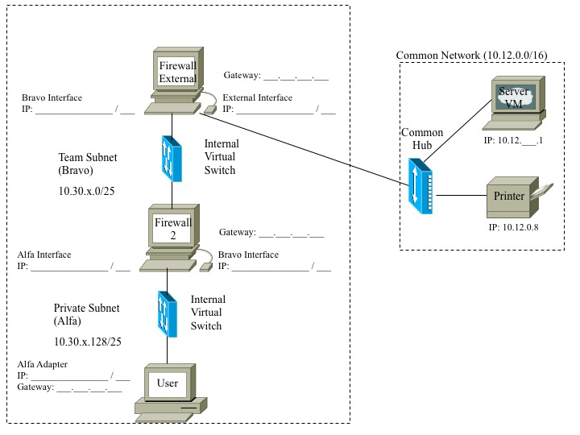

Ce labo vise à :
Dans ce labo, vous deviendrez familier avec la configuration d’un poste de travail Linux à titre de routeur et vous verrez comment faire le routage de trafic entre plusieurs sous-réseaux. Nous accomplirons ceci en 4 phases : la configuration et le testage d’adaptateurs, la configuration d’acheminement IP, le routage et la connexion à d’autres groupes.
Nous utiliserons un nouvel environnement dans ce labo appelé Enterprise Design Exercise que vous utiliserez pour le labo final du cours. Pour vous connecter à cet environnement, utilisez le nom d’utilisateur gef330_edx et le même mot de passe que vous avez utilisé pour l’environnement eee330.
Une fois connecté à cet environnement, vous remarquerez que 7 machines virtuelles sont listées dans le menu obtenu en faisant clic-droit. Pour ce labo, vous utiliserez Firewall-External, Firewall-2 et User. Les trois ordinateurs seront configurés comme indiqué à la figure 1. (modèle téléchargeable ici)

Nous commencerons par configurez le Firewall-External VM. Cette VM agira comme passerelle entre votre réseau d’équipe (Team Subnet) et le réseau commun (Common Network).
Une fois que cet ordinateur a démarré, exécutez ip addr show. Vous remarquerez que cet ordinateur a 7 adaptateurs réseaux virtuels : Alpha, Bravo, Charlie, Delta, Echo, Foxtrog et External. Nous configurerons les adaptateurs External et Bravo du Firewall-External. l’adaptateur externe sera connecté au réseau commun et Bravo fera parti de votre réseau d’équipe.
Plutôt que de simplement taper les commandes ip au terminal, nous écrirons un script pour faire cette configuration.
ip addr requiert les privilèges de root; nous allons créer un alias pour éviter à devoir écrire sudo devant chaque commande.ifconfig ne seront pas persistants; tout redémarrage de l’ordinateur retournera les adaptateurs à leur valeur par défaut.routing_setup.sh dans le répertoire /home/eee330/. cd ~
chmod 755 routing_setup.sh
En Linux, un ensemble de permissions est associé au propriétaire du fichier, à son groupe et au reste du monde (world). Pour chacun de ceux-ci, on spécifie la permission pour la lecture (r pour read), l’écriture (w pour write) ou l’exécution (x) en utilisant un masque de 3 bits, représenté comme trois chiffres entre 0 et 8. Par exemple, 755 donne les permissions rwx au propriétaire et les permissions rx au groupe et les permissions rx au restant du monde.
Entrez les commandes suivantes dans votre fichier et sauvegardez le :
#!/bin/sh
#Aliases
alias ip='sudo ip'
#Interface Configuration
ip link set Bravo up
ip link set External up
# Routing Configuration
Remarquez la première ligne, #!/bin/sh. Bien que vous soyez probablement familier avec l'utilisation du signe dièse (#) pour indiquer un commentaire, le shebang (#!) est utilisé pour marquer le début d'un script et l'emplacement de l'interpréteur de script. Dans ce cas, nous disons au système d'exploitation que ce fichier est un script qui doit être exécuté en utilisant /bin/sh.
Complétez la section #Interface Configuration de votre script pour configurez vos adaptateurs. Comme indiqué à la figure 1, votre adresse IP externe devrait être 10.12.x.30 et l’adresse IP de Bravo devrait être 10.30.x.1. Exécutez votre script lorsque vous avez complétez cette section. Vous pouvez faire ceci d’une fenêtre de terminal en tapant ~/eee330/routing_setup.sh ou en faisant double-clique sur le fichier du GUI (le gestionnaire de fichier dans cette version de Linux s’appelle Thunar).
(#1) Une fois que vous avez configuré vos adaptateurs, testez vos connections. Le Firewall-External devrait pouvoir faire ping au serveur et se connecter à celui-ci avec telnet. Rapportez les résultats de vos tests de connexion.
(#2) Faîte les mêmes étapes pour Firewall-2 qui utilise l’adaptateur Bravo avec une adresse IP de 10.30.x.20/25 et l’adaptateur Alpha avec une adresse IP de 10.30.x.129/25. Listez tout les tests de connexion que vous effectuez et rapporter sur leurs résultats.
(#3) Est-ce que Firewall-2 peut faire ping au serveur ou se connecter à celui-ci avec telnet? Expliquez pourquoi ces test échouent s’ils ne réussissent pas.
Afin de complétez la configuration des adaptateurs, allumez l’adaptateur Alpha de votre User, et soyez certain que tous les autre adaptateurs de cet ordinateur sont éteints. L’adresse IP de l’adaptateur Alpha doit être 10.30.x.140/25.
(#4) Testez vos connexions de la machine User et indiquez avec qui celle-ci peut communiquer et avec qui elle ne le peut pas.
Les commandes qui suivent configurerons vos ordinateurs Linux pour que ceux-ci agissent à titre de routeur pour votre petit réseau. Exécutez les commandes suivants sur les ordinateurs Firewall-External et Firewall-2 :
sysctl -a | grep ip_forward
net.ipv4.ip_forward=0sudo sysctl net.ipv4.ip_forward=1
sysctl -a | grep ip_forward
net.ipv4.ip_forward=1Ceci permettra à vos routeur de faire passer les paquets d’un adaptateur à un autre selon l’information de leur table de routage. Ces changements ne sont pas persistants; soyez-bien certains de les incorporer dans votre script pour ne pas avoir à ré-exécuter ces commandes à chaque fois que votre routeur démarre.
(#5) Imprimez les tables de routage couramment en vigueur au Firewall-External et au Firewall-2 à l’aide de ip route show; incluez celles-ci dans votre rapport.
(#6) Testez les communications entre le Firewall-External, Firewall-2 et la machine User pour vous assurer que des connexions existent entre votre réseau privé (Private Subnet), votre réseau d’équipe et le réseau commun. Vous devriez tester tout les adaptateurs de chaque machine; c’est-à-dire que votre User devrait pouvoir rejoindre les deux adaptateurs du Firewall-External, les deux adaptateurs du Firewall-2 et le serveur. Identifiez quelles connexions ne fonctionnent pas (si c’est le cas); l’utilisation d’une matrice serait idéale pour rapporter vos résultats.
Nous avons un peu plus de connectivité maintenant que les paquets sont acheminés entre les divers sous-réseaux, mais nous n’avons pas encore toutes les routes désirées; nous allons ajouter celles-ci. Souvenez-vous de la commande que nous avons utilisé dans le labo 4 pour acheminer le trafic du serveur vers votre réseau d’équipe.
Dans notre cas, nous devons ajouter une route pour notre sous-réseau privé au Firewall-External.
(#7) Quelle commande devrez-vous exécuter au Firewall-External pour ajouter une route à votre réseau privé?
Vous devez aussi ajouter une passerelle par défaut à votre Firewall-External pour acheminer le trafic au serveur d’équipe.
(#8) Quelle commande devrez-vous exécuter sur le Firewall-External pour ajouter le serveur comme passerelle par défaut?
Une fois de plus, ajouter ces commandes à votre script.
Testez les communications entre les divers ordinateurs une fois de plus. Toutes les connexions devraient maintenant fonctionner, sauf celles entre le User et le serveur.
(#9) Selon ce que vous connaissez du routage, que devez-vous faire pour permettre au User de communiquer avec le serveur?
Une fois que vous avez régler ce problème de communication, exécutez la commande suivante de votre User :
traceroute 10.12.X.1
Vous devriez maintenant voir le sentier pris par les paquets du User au serveur.
(#10) Incluez ce sentier (le résultat de tracert) dans votre rapport.
Souvenez-vous de quelle commande a été ajoutée au serveur pour acheminer les paquets à chaque réseau d’équipe.
(#11) Est-ce que votre réseau est bien configuré pour vous permettre de communiquer avec le User situé dans le réseau privé d’une autre équipe? Si oui, expliquez pourquoi c’est le cas, et fournissez un sentier (selon traceroute) vers leur ordinateur.
(#12) Modifiez la table de routage de votre Firewall-External pour ajouter une route spécifique à un groupe, afin que les paquets passent par le nombre de routeurs minimum. Fournissez un sentier (selon traceroute) qui montre les paquets de votre User passant par vos deux routeurs et par les routeurs d’une autre équipe vers leurs User avant de vous revenir. Le serveur (agissant comme routeur commun) ne devrait pas être dans ce sentier (selon traceroute).
Si vous voulez tester votre configuration lorsqu’aucune autre équipe n’est disponible, vous pouvez communiquer avec la User des instructeurs au 10.30.16.140.
Une fois que vous êtes confiants que vous avez tout ce dont vous avez besoin pour votre rapport de labo, suivez les instructions du préambule pour éteindre votre Windows VM et fermez votre session avec l’ordi hôte. Soyez bien certain de laisser la cage dans le même état que vous l’avez trouvé, et demandez à l’instructeur la combinaison de la clé si vous désirez travaillez hors la session de labo.
Votre rapport est à remettre Mercredi 10 Mars avant 14h00. Votre rapport doit suivre le modèle suivant. Vous devez nommer votre rapport de la façon suivante : GEF330_lab5_NomEtudiant1_NomEtudiant2.zip Pour ce labo, votre rapport doit contenir :